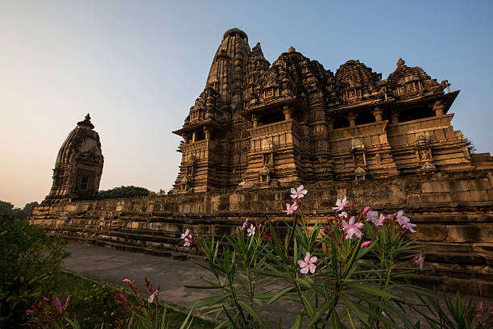

ABOUT

Khajuraho is an ancient city known for its magnificent temples and intricate sculptures. The city is located in the Chattarpur district of Madhya Pradesh and holds spellbinding historical tales and architectural grandeurs.. As per the historical archives, the Khajuraho temple site had 85 temples during the 12th century spread over 20 square kilometres. Among these, only 25 temples have survived the course of time, spread over six square kilometres.
Built in the mediaeval century by the Chandela Dynasty, the UNESCO site of 'Khajuraho Group of Monuments' is famous for its Nagara-Style architecture and graceful sculptures of nayikas (Hindu Mythological female protagonists) and deities. The splendour of the intricate statues is one of the reasons that makes it a popular site to visit among tourists. Built between 950-1050 AD by the Chandela Dynasty, these temples represent various forms of meditation, spiritual teachings and relationships through stimulating art. The temples are famous for their craftsmanship that consist of splendid demonstrations of fine sculptures and exceptional architectural skill, making them one of the most stunning UNESCO World Heritage Sites in India.